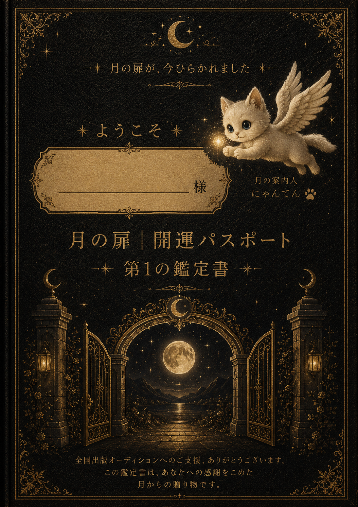

🌙
TSUKIYOMI WONDERLANDみずきかのん
月読みワンダーランドへ、ようこそ
月とともに、今を整えていく世界へのご案内

月の案内人
にゃんてん
「本当の自分」との出会いが、ここから動き出します。
お悩み解決や目標・夢を叶えるために、まず一番大切なのは、ご自身の在り方・考え方・物の見方・振る舞い方が今どういう状況なのかを、しっかりと受け止めることです。
問題に出会ったとき、その部分に関して思考も行動もふと止まってしまいます。
流れを変えたいのに、同じ場所をぐるぐると巡り続ける——そんな経験はありませんか。
流れを変えたいのに、同じ場所をぐるぐると巡り続ける——そんな経験はありませんか。
まずご自身のことをゆっくりと見つめることで、現状がはっきりと見えてきます。月読み鑑定と月読み日記は、あなたの「いい流れ」を予測し、心と状況を「整理」するためのものです。すべては「自分を知ること」から始めていきましょう。
✦ ✦ ✦
— 2つのプレゼント —
✦ プレゼント １ ✦

第一の鑑定書
天命鑑定書をプレゼント。あなたの宿命・命宿から、今の自分を深く知る第一歩です。
✦ プレゼント ２ ✦

7日間 月読み日記チャレンジ
毎日ひとつの問いと向き合う日記。書くことで、夢の実現へのヒアリングが自然と進みます。
◇ ◆ ◇
— ワンダーランドへの招待の流れ —
1
📜 月の種 開運パスポート診断
あなたの中の「月の種」を受け取る。天命鑑定書（第一弾）をプレゼント。
▼
2
📖 7日間 月読み日記体験
ワンダーランドの扉が開き、月とつながる7日間の体験。
▼
3
✉ 第二の鑑定書プレゼント
あなたの「月の種」の成長レポートをお届け。
▼
4
🌟 特別ご招待（抽選20名様）
月読命の個別鑑定60分プレゼント。月読命の宮殿で、あなただけの物語を紐解きます。
すべての扉を体験された方はワンダーランドの「先行住民」です
✦ ✦ ✦
— 月読み育整力メソッド 7つの力の旅 —
① 気づく力感情解放
② 受入れ力理解
③ 整える力自己理解
④ 感謝する力浄化・お陰様
⑤ 育てる力創造・直感
⑥ 受け取る力現実創造
⑦ 宿す力使命・天命
月の種を受け取る → 7つの力を育てる → 使命とともに生きる未来へ
✦ ✦ ✦
— 月読みワンダーランド 全体マップ —

◇ ◆ ◇
ひとつひとつの開運アイテムを受け取りながら、
一歩ずつお陰様の恵みに繋がり、自分を整えていく。
唯一無二のあなたの天命の道を育て、
開運していく。
毎日が活気にあふれ、生きがいを感じられる——
月読みワンダーランドは、そんな世界を目指しています。
自分を知る
整える
天命を生きる
毎日に活気を
夢を実現する
◇ ◆ ◇
皆様の夢へのチャレンジ・理想の実現・お悩み解決を、
月読みワンダーランドは全力でサポートしていきます。
あなたらしい光の人生を、ここから創っていきましょう。 Kanon みずきかのん